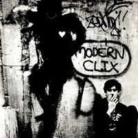
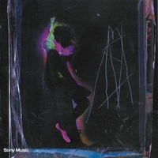

Charly como solista:
Sobre su carrera como solista:
García debutó con un disco doble que contenía la banda sonora de la película Pubis Angelical y Yendo de la Cama al Living, su primer trabajo en solitario. Obtuvo una gran difusión debido a la prohibición de pasar música en inglés en la radio por la Guerra de Malvinas.
Esto sería sólo el comienzo de una carrera muy extensa y de una calidad extraordinaria.
Discografía
-
Yendo de la Cama al Living (1982)
Este disco evidencia la capacidad extraordinaria para escribir y componer de García, incorporando por primera vez a su repertorio influencias "new-wave". Presenta clásicos como "Inconsciente Colectivo" y "Yo no Quiero Volverme Tan Loco".
-

Clics Modernos (1983)
Muchas veces considerado el mejor trabajo de Charly e incluso definido como una obra maestra, Mordern Clix combina complejos arreglos musicales con ritmos bailables presentes en "Nos Siguen Pegando Abajo" y "No Me Dejan Salir". El álbum fue concebido sobre el final de la última dictadura cívico-militar, contenido muy presente en "Los Dinosaurios".
-
Piano Bar (1984)
Presentando un sonido crudo y rockero Piano Bar es uno de los discos más aclamados por la crítica. Para las sesiones de grabación Charly convocó a la banda GIT, incluyendo además a Fabiana Cantilo y Daniel Melingo.
-
Parte de la Religión (1987)
Una de las producciones más prolijas de García, con éxitos como "Buscando un Símbolo de Paz" y "No Voy en Tren". En este disco todos los instrumentos fueron grabados por Charly, excepto la batería.
-
Cómo Conseguir Chicas (1989)
Charly definió este material como una recopilación de canciones sueltas que no habían llegado a ser publicadas. De este álbum destacan "Fanky" y "Fantasy".
-
Filosofía Barata y Zapatos de Goma (1990)
Fiel a su estilo, García hace de Filosofía Barata y Zapatos de Goma uno de sus trabajos más íntimos, exponiendo su situación personal en el disco, su separación de María Rosa Yorio y la crianza compartida de su hijo Migue.
García debió sortear un juicio por "ofensa a los símbolos patrios" por su versión del Himno Nacional Argentino; finalmente fue aprobada por los tribunales y publicada.
-
La Hija de la Lágrima (1994)
Un ópera-rock con muchos pasajes instrumentales de mucho virtuosismo, fue un álbum de transición entre los discos que vendrían posteriormente, incluyendo varias capas de guitarras, teclados y voces.
-

Say No More (1996)
Este disco es considerado el más oscuro y experimental de Charly, un disco conceptual, en el que la decadencia es el concepto mismo. Say No More refiere al concepto de grabar sin tener un guión claro ni una lista de temas específica; con la intención de conseguir que lo que destaque sea la frescura.
-
El Aguante (1998)
Este álbum presenta varias versiones de temas de otros artistas, también cuenta con colaboraciones con Joaquín Sabina y David Lebón.
-
Influencia (2002)
Influencia combina el concepto de frescura de Say No More con una producción más cuidada. Marcó el "renacer" de la carrera de Charly luego de mucho problemas personales, tuvo una buena recepción por parte de la crítica y fue aclamado por el público.
-
Rock and Roll YO (2003)
Un disco lleno de matices y sonidos que convierten la voz de Charly en un instrumento más. Los temas más importantes fueron "Asesíname" y "Love's in the Air Tonight", esta última siendo dedicada a la fallecida María Gabriela Epumer, su compañera musical de muchos años.
-
Kill Gill (2010)
Este álbum comenzó su producción alrededor del 2006, y luego de diferentes versiones y rumores finalmente fue lanzado en 2010. Charly definió "Kill Gil" como una mini-ópera sobre un chico que pone una bomba en Nueva York, y que a través de las canciones advierte a su familia, sin embargo como ellos no las interpretan también se mueren "por giles".
-
Random (2017)
Random fue publicado después de dos hospitalizaciones y fue atravesado por el abandono de los estupefacientes del artista. El trabajo conecta con distintas etapas de su carrera, desde su niñez, sus días de exceso e incluyendo algo del sonido electrónico de materiales recientes.